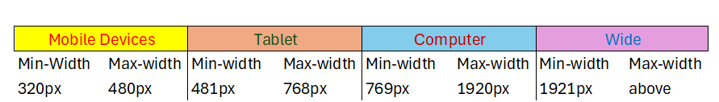
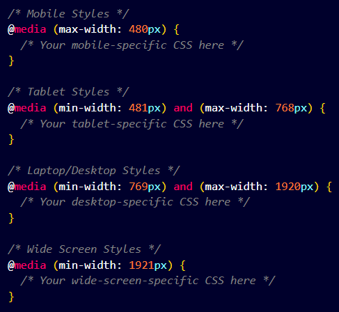
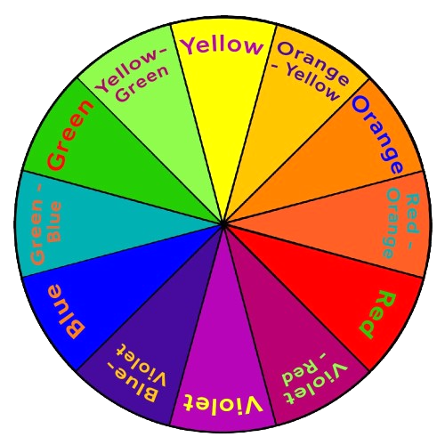
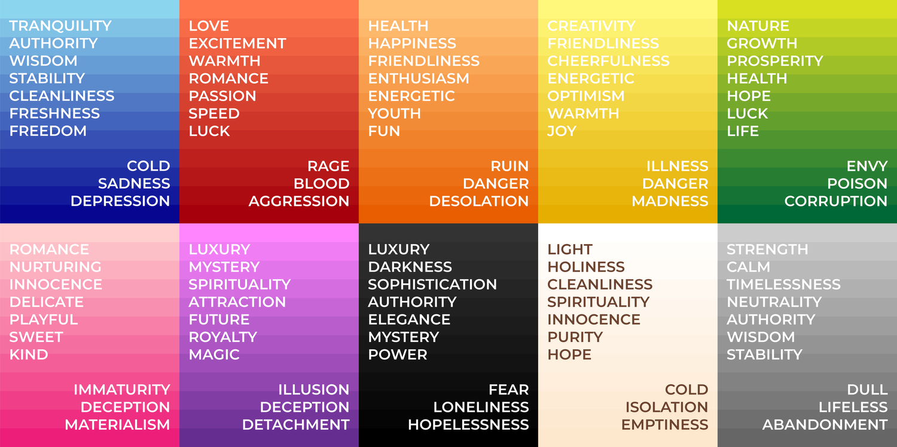
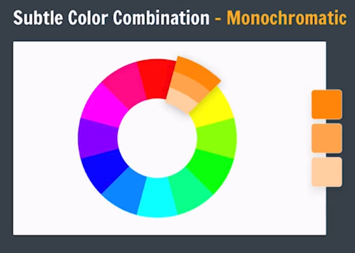
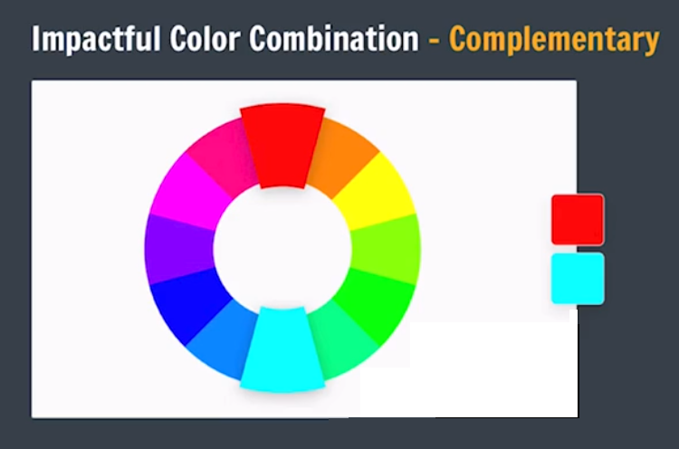
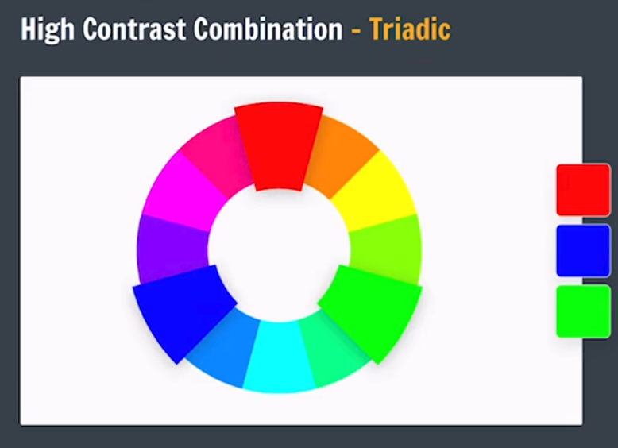
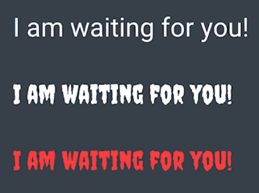
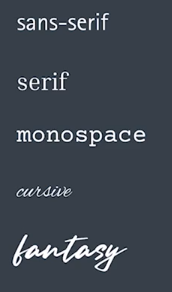

Media Queries
♠ What is a Media Query in CSS?
A media query in CSS allows you to apply different styles to a webpage based on the device's characteristics, such as screen size, resolution, or orientation. It helps create responsive designs that adapt to various devices like mobile phones, tablets, and desktops.
♠ How Does It Work?
Media queries use conditions to check specific features of the device or browser window. When the conditions are met, the styles within that media query are applied.
/* CSS rules go here */
}
CSS Media Types
| Value | Description |
|---|---|
| all | Used for all media type devices. |
| Used for print preview mode | |
| screen | Used for computer screens, tablets, smart-phones etc. |
CSS Common Media Features
| Value | Description |
|---|---|
| orientation |
Orientation of the viewport. This has two values
|
| max-height | Maximum height of the viewport. |
| min-height | Minimum height of the viewport |
| height | Height of the viewport (including scrollbar) |
| max-width | Maximum width of the viewport |
| min-width | Minimum width of the viewport |
| width | Width of the viewport (including scrollbar) |


Syntax of Media Query
body {
background-color: lightgreen;
}
}
Use of "not", "only" & "and" Keyword
-
NOT :
This is used to exclude a certain condition. For example, not screen would apply the styles to everything except screens.
This keyword inverts the meaning of an entire media query. -
ONLY :
This keyword prevents older browsers that do not support media queries from applying the specified styles. All conditions must be true for the styles to apply.
-
AND :
This keyword combines a media type and one or more media features. It has no effect on modern browsers.
Example
body {
background-color: lightgreen;
}
}
Z-index
It decides the stack level of elements.
Overlapping elements with a larger z-index cover those with a smaller one.
z-index: 1 / 2 / ...;
z-index: -1 / -2 / ...;
Note :-
z-index only works on positioned elements (position: absolute, position: relative, position: fixed, or position: sticky) and flex items (elements that are direct children of display:flex elements).
For Z-index position must not be static or default.
Basic Design Principles
Color Theory
Color Wheel
Different colors have different meanings

Color Combination



We can go to following website for more colors of color wheel: Canva Color Wheel
Canva Color Pallet Generator
Canva Color PalletTypography
Style & Appearance of Text
Font Families

We can use different font for different type of Website. eg. :
- for portfolio : proffessional fonts linke Tiems new roman, calibry, roboto
- for Icecream selling website : fun / funky fonts linke fantasy
GOOGLE FONTS
Icons
We have to use different icons on our page. We can insert icons to our page from following websites. :-
- GOOGLE ICONS
- HUGEICONS
-
REMIX ICON
then we have to find github icon on the right-upper corner of the website then click it. Now we have to find CDN link and paste it in our head secton's. Then we find the icon and get its code and paste it where we want to insert our icon.
REMIX ICON GITHUB
Click below to see mini project (Side bar) :-
SIDEBAR MINI PROJECT